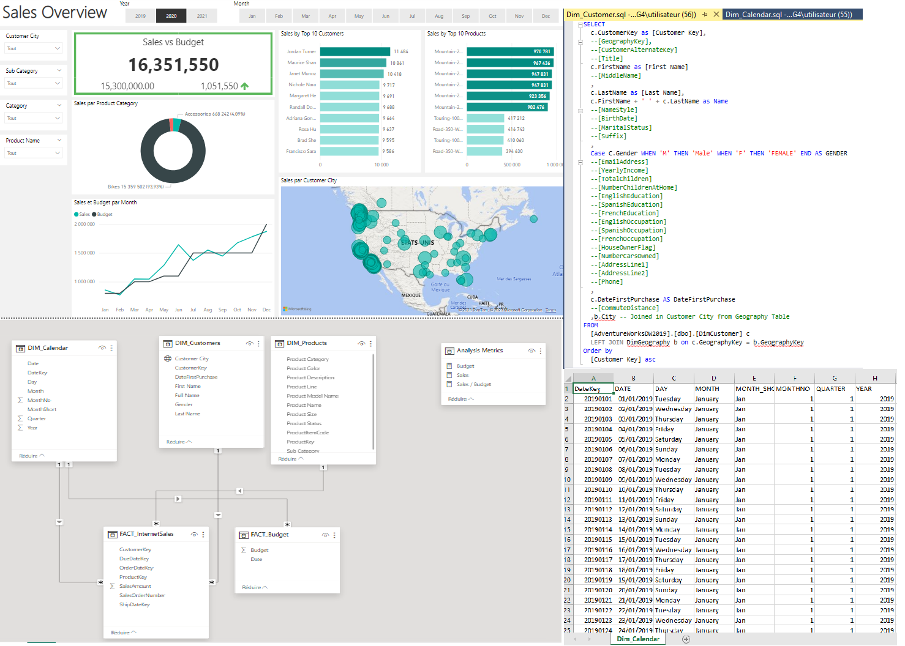
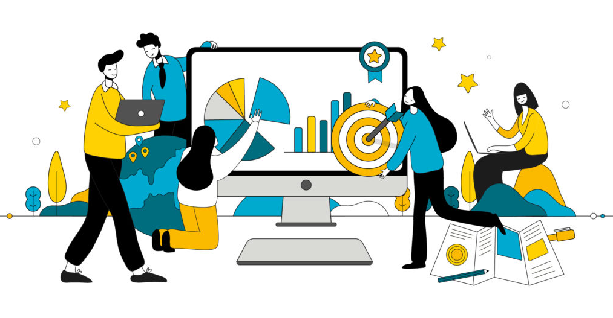
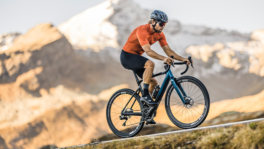
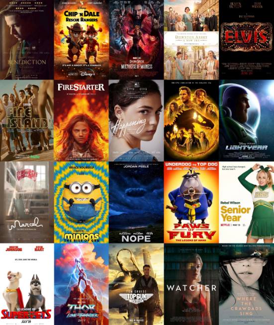
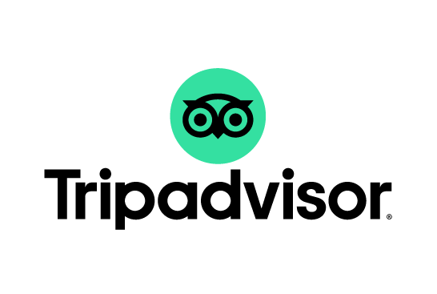

December 12, 2023
The process involved creating queries to update, clean, and merge data, ensuring a robust database using SQL.
Finally, an interactive Power BI dashboard was crafted,
incorporating relevant charts and KPIs for in-depth sales analysis.

Using AI and Logistic Regression to Create a Forecasting Tool
credit risk assessment, improving accuracy and
reducing risks for financial institutions.
Transformation of traditional methods, demonstrating a
expertise in finance and predictive analytics.

Forecasting environmental scores for materials used in product creation and assessing their environmental impacts using a Lasso regression model.
I took on the challenge of answering pivotal questions through the development of an insightful Dashboard, employing a combination of SQL and Power BI.

In our relentless pursuit of comprehending and catering to our clients' needs, we pinpointed crucial data requirements that propelled us into a Tableau-driven exploration.

My primary role involved overseeing the meticulous data cleaning process and crafting an automated dashboard in Excel.

Analyzing the correlation between various movie features using Python, Pandas, Seaborn, and Matplotlib.

Conducted a comprehensive analysis of TripAdvisor dataset using Python, Pandas, Seaborn, and Scikit-learn (PCA, Ward) .